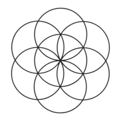

Chronic Pain Healing
If you've ever had a headache after working too much or a stomach ache when you felt anxious, you already know that our emotional state can create physical sensations and symptoms. The brain can alter muscle tension, blood flow, and neural signaling in ways that create very real pain.
In a world where none of us feels truly safe, our nervous systems stay locked in threat-response. Emotions like rage, grief, fear, and shame become dangerous to feel, so we push them out of conscious awareness and deeper into the body.
When the emotional pressure builds beyond what we can contain, the nervous system steps in. It creates physical pain strong enough to pull our attention away from the feelings that seem too overwhelming or unsafe to experience.
Pain becomes a distraction from emotion, a shield against the systems we're navigating, and a boundary the body sets when we cannot.
Our work together begins with helping you deeply believe that you have the power to live pain-free. From there, we'll retrain your nervous system to recognize that pain is no longer a necessary form of protection. As we create space, safety, and compassion around your emotions and the situation that has created the pain, the pain naturally will recede because it will no longer serve a protective purpose.
Have questions or want to learn more?
Ask here
This work is for you if…
- You've been living with pain that persists over time, without a clear cause or explanation.
- Your pain lingers, flares, or shifts without warning.
- Your scans or tests look "normal," but the symptoms remain.
- You feel drained by endless treatments, appointments, and quick fixes.
- You've begun to fear your own body—or movement itself.
- You sense that emotions are connected to your pain, but don't know where to start.

My Approach
I blend Dr. Sarno's mind-body based healing method with ancient wisdom practices, creating a holistic path to lasting freedom from chronic pain.

Dr. Sarno's Method
Dr. John Sarno's years of work with his clients and groundbreaking research on mind-body medicine forms the foundation of my practice.
Yogic Practices
As a yoga teacher and practitioner, these philosophies and practices guide my work. I turn towards the practices of asana, mudra, mantra and pranayama as a tool of embodiment and connection.
Breathwork
Through conscious connected breath and breath journeys, we create pathways to release what's been held in the body.
Personal Pain Journey
The tools I share emerged from my personal experience with chronic pain and have become the pathway in which I guide others.
Collective Liberation
I'm aware of the capitalist and patriarchal world we're living in and how it leads to the cycle of chronic pain. I use this context in my sessions to help us find freedom from these oppressive forces.
Mindfulness
I use mindful meditation and journaling as tools to witness, to understand and to communicate with chronic pain.
Understanding pain as communication from our nervous system is the first step to reconnection. When we listen instead of fear, respond instead of resist, the cycle can slowly begin to shift.
Frequently Asked Questions
Common questions about working together and the healing process
No. The pain is not imagined—it is a real, physical experience—but its origin is in the nervous system, not in structural damage.
It can be helpful to have a doctor rule out anything serious—that peace of mind often supports the healing process. That said, this work is safe, educational, and has no contraindications, so you're welcome to begin whether or not you choose to seek further medical tests.
Mind-body work does not deny these findings, but research (and experience) show that many people with the same diagnoses live pain-free. What matters is the role your nervous system is playing in amplifying or even creating the symptoms.
Everyone's journey is unique. Some people feel relief after a single insight; others take weeks or months of steady practice. I usually recommend 4–6 sessions to build a strong foundation.
This is one of the most common fears. Mind-body healing requires persistence and setbacks are a part of the process. I am confident the tools work—but your nervous system may resist at first. The good news is, countless people around the world (myself included) have healed this way and I know you can too.
Mind-body pain is often mistaken for medical or structural conditions such as herniated or bulging discs, scoliosis, arthritis or joint degeneration, fibromyalgia, chronic fatigue syndrome, irritable bowel syndrome and other gut issues, migraines or tension headaches, pelvic pain syndromes, carpal tunnel or repetitive strain injuries, autoimmune-like flare-ups and many more.
Want to start exploring this work on your own? Check out the resources I've put together.
Explore Resources